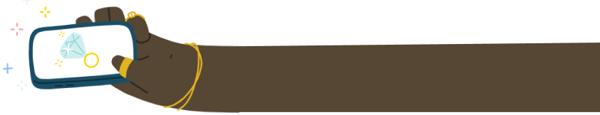

"Ring sizer"
- redesign the app!!
(Uniqo Lab.)
Ring band measurement tool.

UI Designer
Application
Fig Jam, Figma
2 weeks
Introduction
Being associated with a jewelry design, I know some nuances that exist. One of them is determining the appropriate ring size for a customer when it comes to online sales. This leads to errors when ordering and disappointment in buying jewelry online. I took the original application that existed on the market for a long time “Ring sizer” from Uniqo Lab. and proposed my own solutions in the field of usability.
Heruistics
According to the principles of interaction design, I revised the screen, editing the visual part, which will transfer the “Measurement results” to the same screen. Improved the accuracy of the measurements (the area inside the circle of the ring is colored in a different color, which allows measurements to be taken regardless of the thickness of the ring and equipped with a center).


The physical measurement is the most accurate, this is a necessary function, which nevertheless is knocked out the information structure of the App, therefore was sent to the Hamburger menu. Together with saved data about previous measerments.
Visual improvment
I did not have a solid argument to change blue color. But I still revised the palette several times and updated the logo.
Key learnings:
1. Purity of information structure is a guarantee of ease of perception.
2. Unfortunately we often see, how user needs are ignored and exploited, overloading the attention with advertising and taking up valuable time. I’m sure there would be many users willing to pay for a convenient and clean UI, but there is no such function - this is the company's ideology.
2. Unfortunately we often see, how user needs are ignored and exploited, overloading the attention with advertising and taking up valuable time. I’m sure there would be many users willing to pay for a convenient and clean UI, but there is no such function - this is the company's ideology.
here you can look on original ring-sizer

(Uniqo Lab.)

or check out
my projects:
Gallery&Workshop
"SCHMUCK-Fritz"
(website)
(website)
Challenge manager
"Better ME"
(application)
(application)
(c) Oxana Pravdina 2024